Proctor Character
The player's proctor on its new base, Quaternius Ultimate Modular Men and Women (CC0), chosen in the Proctor Base Comparison (candidate B). A man and a woman on the kit's rig, with preset faces, brows, hairstyles and facial hair, skin, hair and eye colours from the classroom's own palette, the three clips the game plays, and a first refit of three wardrobe items. Students keep today's body. Everything here is a render of the exported files in Blender 5.2 (EEVEE, flat colours); nothing is in the game yet.
The two bases
The man is the kit's Casual 2 body with the Suit head's face; the woman is the Casual body with the Suit head's face. Each wears the issued tee (here in the issued teal), the kit's trousers and shoes, and the default face, brows and hair. Both play the Standing clip.
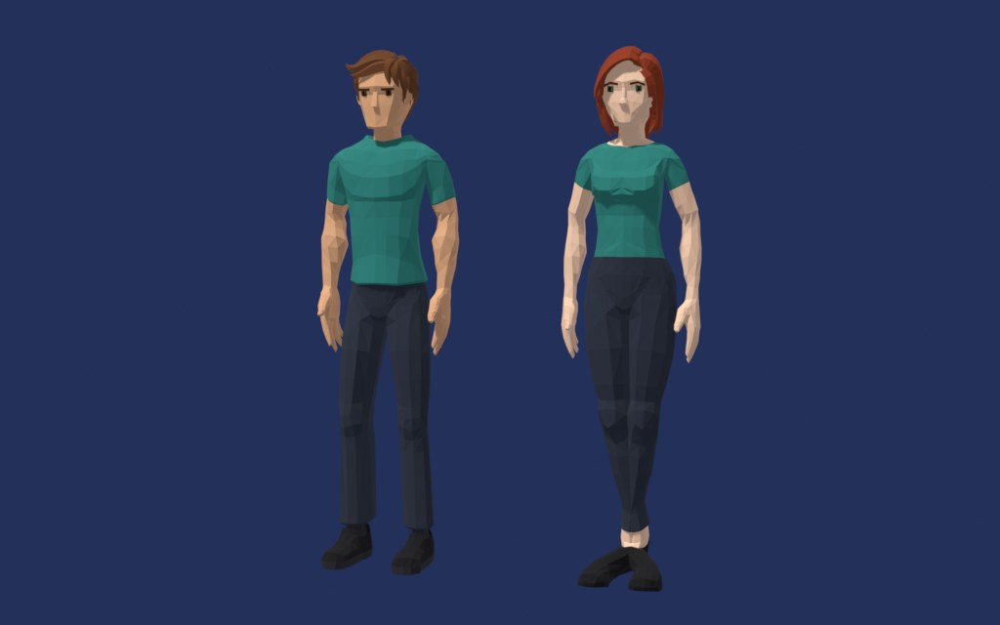


In the room
The game's fixed camera: 58° pitch, 45° field of view. The students are today's body playing the Writing clip; one stands in the aisle. From above, the proctor reads by its hair, shoulders and colours.


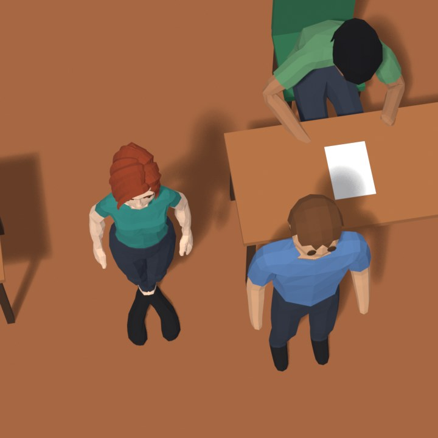
Wardrobe preview framing
512 × 640, the Wardrobe preview's size: full figure and a head-and-shoulders crop, front and three-quarter. The man wears stubble here.


Faces, brows and facial hair
The kit's heads share a single face per body, so the four presets are baked shapes of it: jaw width, chin length, cheeks and nose. Everything from the brows up is left alone, so the eyes, every brow and every hairstyle fit all four. Each preset names a default brow, but brows are a choice of their own.


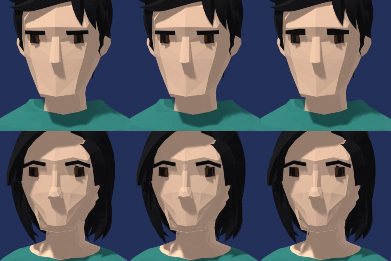
Hair and colours
Every face with every hairstyle. Each cell takes the next skin, hair and eye colour, so the grid also shows the swatches together. The skin, hair and eye colours are the classroom's student palette; grey hair is added for the proctor.
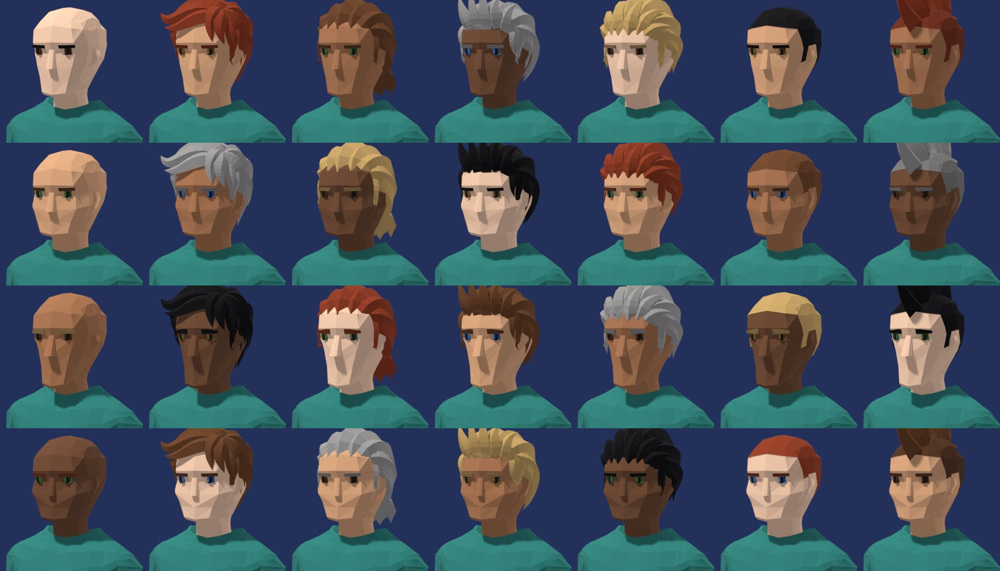


What is in proctor.glb
One file, two rigs (ProctorRig_M, ProctorRig_F, the kit's skeleton). Every part
is a separate skinned mesh with a stable id. A manifest next to the file lists every id, its triangles, the clips, the
role materials and the bones that hair, hats and glasses attach to (Head), so the Unity stage can code
against it.
| Category | Man | Woman |
|---|---|---|
| Body | body_m (arms, hands) 2,064 · top_m_issued 742 · legs_m_default 734 · feet_m_default 552 |
body_f 2,166 · top_f_issued 488 · legs_f_default 706 · feet_f_default 538 |
| Faces | face_m_01–04: Classic, Broad, Long, Round · 448 each |
face_f_01–04: Classic, Heart, Square, Round · 714 each |
| Eyes | eyes_m (iris + pupil) | eyes_f |
| Brows | brows_m_straight, _thick, _heavy · 24–40 |
brows_f_arched, _soft, _straight · 40–44 |
| Hair | none, hair_m_side 1,952, _ponytail 1,180, _spiky 1,632, _swept 1,400, _buzz 140, _mohawk 644 |
hair_f_bob 2,078, _layered 2,044, _bun 246, _mohawk 760, _pixie 1,906, _ponytail 1,146 |
| Facial hair | none, fh_m_stubble 44, fh_m_moustache 120, fh_m_beard 480; one mesh per face (fh_m_beard__face_m_02) | none |
| Clips | Standing (41 frames), Walking (33), PresentDocument (73), at 24 fps; one animation drives both rigs | |
- The women's skull. The kit's women are a face mask with the hair as the back of the head. The build grafts the man's skull behind the mask, scaled to her forehead, and tucks the kit's large pointed ears, so short and borrowed hairstyles work on her.
- Hair comes out of the kit's combined head meshes by material and by island: brows and piercings are their own islands, so the buzz cut and the bun lose their brows and the mohawk loses its lip ring. Every hair is pushed 2 mm clear of all four face shapes.
- Builds (body shapes) are not included: the kit has none, and any build would have to be applied to every refitted garment too. A bone-scale build in Unity is possible later.
The three clips
The names are the ones SupervisorFigure looks up today. Six frames of each, man then woman.
Standing
The kit's Idle_Neutral: relaxed, feet together, slow breathing. The kit's
other idle stands in a fighting stance.
Walking
The kit's Walk, in place. The women's kit clips run 25 % longer than the
men's, so hers are retimed to the man's 41 and 33 frames: one clip, one length for both rigs.
PresentDocument
Retargeted from candidate.glb by bone direction (spine, neck, head,
arms); hips, legs and fingers come from the kit idle so the feet stay planted. Like the original it is a held pose:
right hand out at the waist, the game blends into it.


Tinting: a material per role
Every surface is a material named for its role (Proctor_Skin, Proctor_Hair,
Proctor_Hair_Brows, Proctor_Eyes, Proctor_Top, Proctor_Legwear,
Proctor_Shoes …). The game already colours the proctor this way: one white URP Lit material, a
MaterialPropertyBlock per submesh, the role read from the source material's name. Vertex colours would need a
new shader, since URP Lit ignores them. Two roles need a small rule the game does not have yet: stubble (a blend of skin
and hair) and the pupil (a fixed near-black). The manifest lists each role with its colour factor.
Wardrobe refit: three items
A checkpoint before the rest of the 52 wardrobe meshes. Shirt & Tie, Formal Trousers and the Cap are
fitted to both bodies in proctor_wardrobe.glb, worn here in their shop colours.
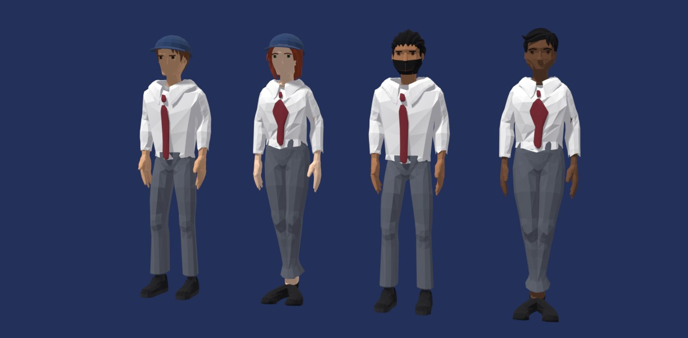
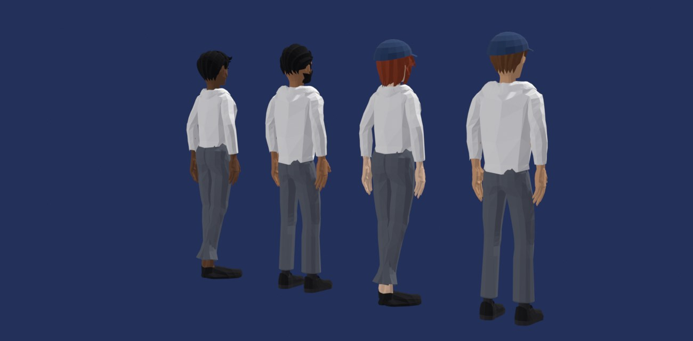
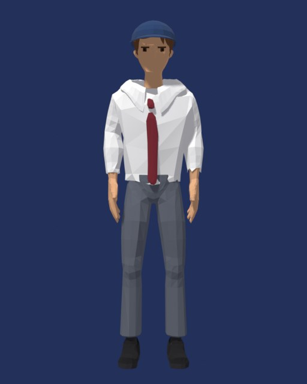
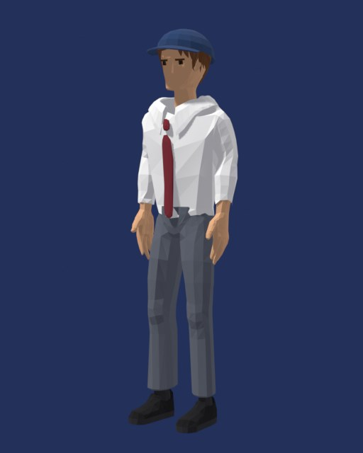
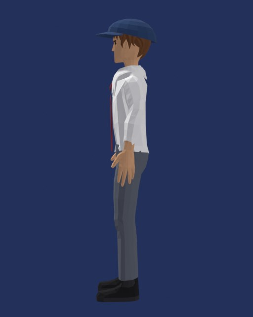

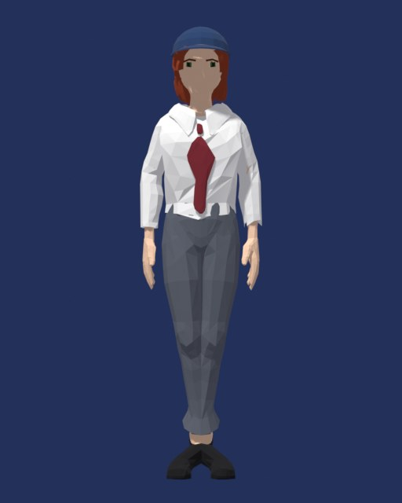

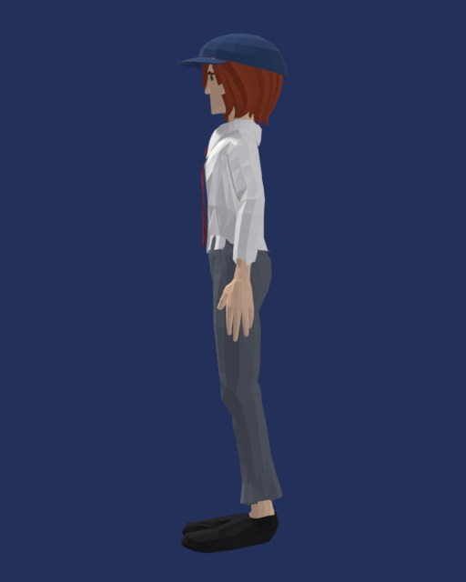
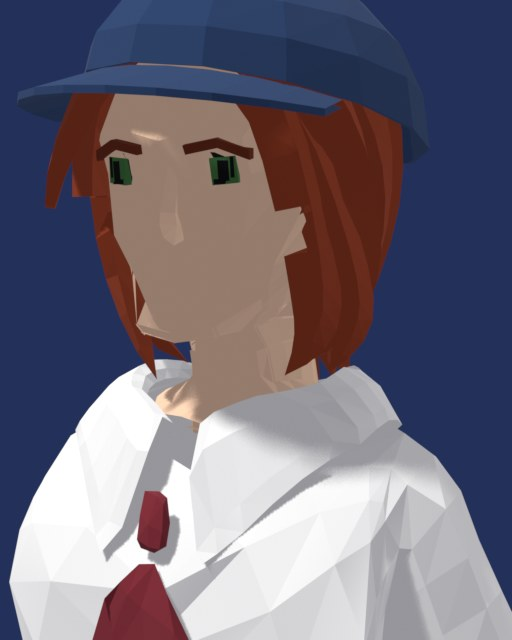
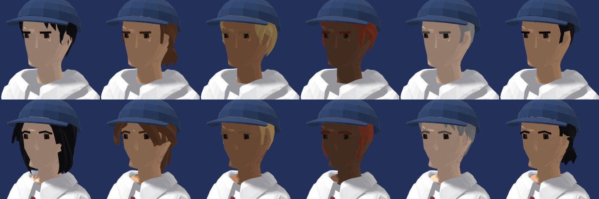
__cap variant pulled
inside it (side part, spiky, swept, mohawk; layered, mohawk, pixie). Ponytails, buzz, bob and bun fit as they are.Top: skinned refit
- Pose the kit rig into the old body's A-pose (arms and legs aimed along the old bones).
- Warp the garment bone by bone from the old skeleton to the posed kit skeleton: head to head, direction aligned, limb and spine segments stretched to the kit's length.
- Re-project every vertex onto a smoothed copy of the posed kit body, at its original distance from the old body, blended over its torso and arm weights so the armpits do not tear.
- Smooth the displacement and push clear of the body (6 mm, 10 mm on the arms).
- Copy skin weights from the nearest kit triangle in the vertex's own region.
- Un-pose back to the kit's T-pose rest with each vertex's own inverse skinning matrix.
A refitted top replaces the issued tee, which the manifest marks with hides.
Trousers: the kit's own cut
Trousers are only a colour on the body today. The kit has real cuts on the same rig: Formal Trousers is the suit leg, tinted by the same Legwear role, with no refit at all. Jeans already exist as the man's default legs, and the kit also has work trousers and shorts.
Cap: rigid refit
The old skull (eye level, centre, half-widths, crown) is mapped onto the new one, raised 12 mm for the kit's higher
brows, and weighted 100 % to Head. Each hairstyle is then tested against the cap; where it pokes through,
a variant is pulled 4 mm inside the cap.
The remaining items
Estimate for refitting everything else with the same scripts. About one long agent run, 4–6 hours, before the Unity stage wires it up.
| Group | Items | Method | Estimate |
|---|---|---|---|
| Tops | Polo, Sweater, Cardigan, Blazer, Hoodie, the three tees, the issued long sleeve | skinned refit, both bodies | ≈2 h + ≈1 h polish (blazer lapels, short sleeves) |
| Lanyard | one per top per body | rigid on Chest, laid on each refitted top | ≈1 h |
| Hats | Beanie, Flat cap, Bucket, Graduation | rigid refit + hair under each hat | ≈1 h |
| Glasses, watch | Round, Square, Watch | rigid refit on Head / Wrist.L | ≈0.5 h |
| Shoes | Sneakers, Runners, Loafers, Boots | the kit's own feet, or skinned refit | ≈0.5 h |
| Trousers | Jeans, Chinos | the kit's legs | ≈0.25 h |
| Badges | pin and eight crests | unchanged; re-measure the chest pose per top | Unity stage |
Triangles
Target: at most 8k per dressed proctor on mobile.
| Figure | Parts | Triangles | vs 8k |
|---|---|---|---|
| Man, undressed, heaviest | body, tee, legs, feet, face, eyes, brows, side-part hair, beard | 7,060 | under |
| Woman, undressed, heaviest | the same with the bob | 6,782 | under |
| Man in the three items | shirt & tie, formal trousers, cap, side part under the cap (tee hidden) | 7,008 | under |
| Woman in the three items | the same with the bob | 7,550 | under |
| Man, every slot (estimate) | side part, beard, blazer, cap, glasses, watch, lanyard | ≈8,100 | just over |
Open problems
- The shirt collar is broad on the man's wide shoulders, and the hem is a little ragged. A per-item polish pass (collar band pulled in, hem straightened) belongs with the other tops.
- Skin can show through a sleeve at the elbow in some walking frames. More clearance, or hiding forearm skin under long sleeves, fixes it.
- The woman's tie comes out wide: it follows the bust when it is re-projected. Rigid details such as ties and buttons should be carried over rigidly instead of projected; part of the tops' polish pass.
- Face variety is shape only. The kit has one face per body, so the four presets differ by jaw, chin, cheeks and nose, plus brows and facial hair. Noses and eyes as separate parts would add more.
- The mohawks are kept as presets; they may read too loud for a proctor.
- Every slot filled on the man comes to about 8.1k triangles. Dropping the side-part hair under a hat to a lighter variant would bring it under.
Method and licence
- All parts, clips and refits are built by scripts in the game repo (
ArtSource/Characters/Proctor/), run headless in Blender 5.2, and exported as glTF for glTFast. The renders read the exported files back, so they show what Unity will import. - Lighting and cameras follow the base comparison: one sun, a soft fill, a dark blue backdrop like the Wardrobe preview, and the game's room camera.
- Ultimate Modular Men and Ultimate Modular Women by Quaternius: CC0 1.0 Universal. Credit is not required but is given here. Modular Men · Modular Women
- The wardrobe items, today's student body and the classroom are this project's own. No paid or generative tool was used.